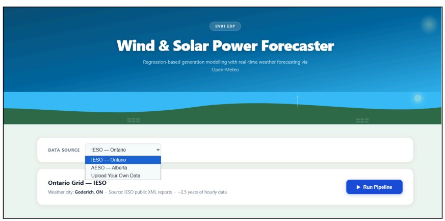
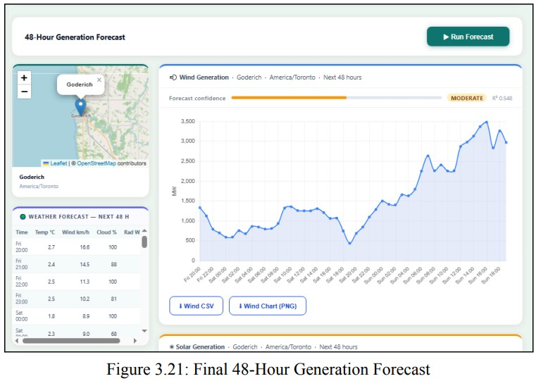
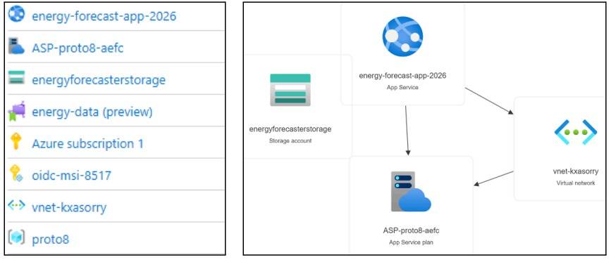
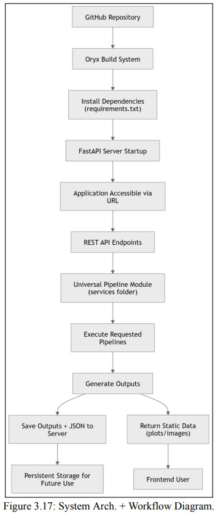
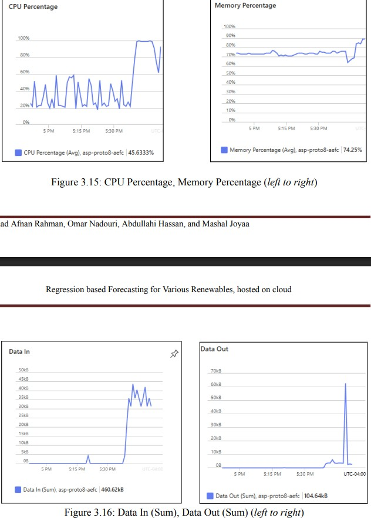

Three data sources feed into one unified pipeline. Every path converges on the same master CSV schema before any modelling begins.
The full web interface served via FastAPI and deployed on Azure. Users select a data source, run the pipeline, and get model metrics, scatter plots, and a 48-hour forecast chart.





From a proof of concept data pipeline to a fully cloud-hosted forecasting platform across 8 prototype iterations. The final system supports three data sources (IESO, AESO, user uploads), trains both linear and polynomial regression models per fuel type, evaluates performance with R², RMSE, and MAE, and produces a 48-hour wind and solar forecast for any Canadian city through a browser-accessible web interface deployed on Microsoft Azure.
What started as a simple OLS regression on Ontario grid data became a market-agnostic modular pipeline with robust statistical modelling, physical constraints on forecast outputs, automatic schema detection for user-uploaded files, and a CI/CD deployment workflow tied directly to GitHub. Model-generated forecasts were also validated against IESO Variable Generation Forecast Ontario Total values across a 48-hour window as an external benchmark.
The polynomial Huber regression model achieved R² of 0.9785 for wind and 0.9801 for solar on a temporal test split. RMSE for wind was 137.56 MW (3.15%) and MAE was 96.05 MW (2.20%). For solar, RMSE was 18.02 MW (4.18%) and MAE was 10.04 MW (2.33%). The no-lag forecast model eliminates recursive error compounding for clean 48-hour predictions.
Full academic report covering system design, regression theory, all 8 prototype iterations, Azure deployment architecture, and model performance evaluation with R², RMSE, and MAE. Submitted to the Department of Electrical, Computer and Biomedical Engineering at Toronto Metropolitan University.
TMU Electrical Engineering Capstone team, supervised by Shima Bagher Zade Homayie.